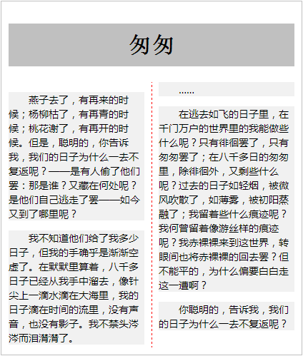

语法：
column-span:取值
说明：
column-span属性用于现实跨列效果
| 属性值 | 说明 |
|---|---|
| none | 表示元素不跨越任何列（默认值） |
| all | 表示元素跨越所有列，跟none值相反 |
使用方法：
column-span:all; /*某标签跨越所有的列*/
兼容性：
- 浅绿 = 支持
- 红色 = 不支持
- 粉色 = 部分支持
| 支持版本\类型 | IE | Firefox | Safari | Chrome | Opera |
|---|---|---|---|---|---|
| 版本 | 6-9 | 4-18 | 5.1.7 | 13-23 | 11.1 |
| 版本 | 10 |
橘色说明要加浏览器的前缀
事例：
列间边框为“1px的红色虚线”
body{
width:400px;
padding:10px;
border:1px solid silver;
-webkit-column-count:2;
-webkit-column-gap:20px;
-webkit-column-rule:1px dashed red
}
h1{
height:60px;
line-height:60px;
text-align:center;
background-color:silver;
-webkit-column-span:all;
}
